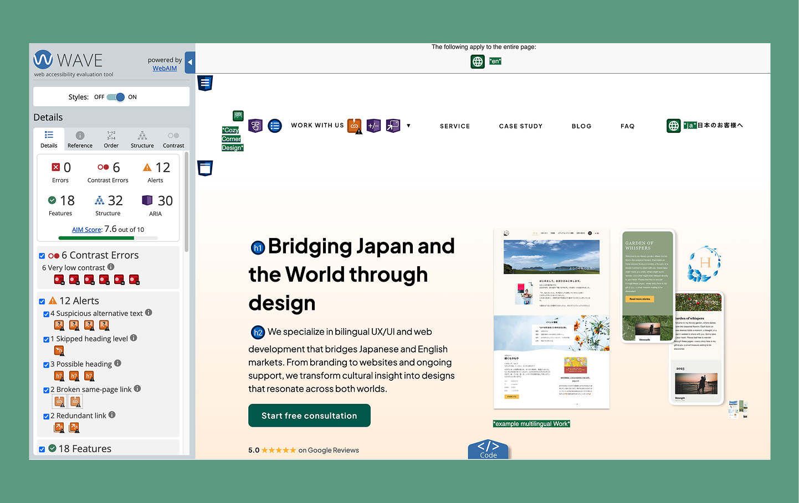

アクセシビリティと聞くと、少し難しそうだったり、大きな企業だけが考えるもの、というイメージを持つことがあるかもしれません。
でも、自分のウェブサイトを改めて見直してみたとき、シンプルなことに気づきました。
アクセシビリティは、ただの「対応」や「ルール」ではなく、分かりやすさや使いやすさ、そして実際にどのように体験されるかに関わるものだということです。
そこで今月は一度立ち止まって、自分のウェブサイトをアクセシビリティの観点から見直してみることにしました。
⚠️ ご参考までに:
本記事は、アクセシビリティやWCAGの視点で自身のウェブサイトの見直し内容をもとにしています。ご紹介している気づきや改善点は、サイトの目的やユーザーによって異なる場合がありますので、あくまでも参考としてご覧ください。

（特に小さなビジネスにとって）なぜアクセシビリティが大切なのか
アクセシビリティというと、「障がいのある方をサポートするもの」というイメージが強いかもしれません。それはもちろん、とても大切な視点です。
でも実際には、それだけではありません。
例えば、指をケガして一時的にマウスが使えなかったことはありませんか？ あるいは、目を疲れて画面が見えづらくなったことはありませんか？
こうした状況は、誰にでも起こり得るものです。ずっと続くものではなくても、その間はサイトの使い方が大きく変わります。
「自分には関係ない」と思っている方でも、気づかないうちにアクセシビリティの機能に助けられる場面があるかもしれません。
アクセシビリティは例えば：
• コンテンツがどれだけ読みやすいか
• メッセージがどれだけ分かりやすく伝わるか
• ユーザーがどれだけ安心して操作できるか
といったことにも影響します。小さなビジネスにとっては、これはそのまま：
• 信頼感
• ユーザー体験
• そして最終的な成果（コンバージョン）
につながります。
World Wide Web Consortium のガイドラインは良い指針になりますが、アクセシビリティは単なるチェックリストではなく、継続的に考えていくデザインの一部だと感じています。
なぜ自分のサイトを見直しているのか
デザイナーとしてアクセシビリティやWCAGについて学び続ける中で、これらの考え方を実際の制作にどう活かせるのかを、もっと具体的に理解したいと思うようになりました。
つまり、どのようにアクセシブルなコンテンツをつくるのか、どのように課題に気づき、どのように改善していくのか、という点を見直したいと思いました。
自分のサイトを見直すことで、普段とは違う視点に立ち、機能、色の使い方、Aria-labelの使い方など、見落としがちな細かな部分に気づくことができ始めています。
そしてそれは、自分自身のサイトだけでなく、今後のクライアントワークにおいても、より分かりやすく、アクセシブルなデザインにつながっていくと感じています。
今回見ている範囲
すべてのページを一度に見直すのではなく、まずはホームページとサービスページから始めています。
これらのページは、ユーザーの流れの中でも重要なポイントにあたります。サイトに訪れ、内容を理解し、次の行動を考えるまでの流れになるからです。
• ホームページは第一印象をつくり、全体の方向性を伝える役割があります。
• サービスページは、内容をより深く理解し、自分に合っているかを判断する場になります。
まずはこの2つに焦点を当てることで、重要な意思決定の場面において、どれだけ分かりやすく、使いやすい体験になっているかを見ていきたいと思っています。
使用しているツール
現状を把握するために、ツールと手動のチェックを組み合わせています。
自動チェックツール：
• Google Chrome（Lighthouse）
• WAVE Evaluation Tool
コントラストや属性の不足など、技術的な課題を見つけるのに役立ちます。ただ、これだけでは分からないことも多く、あくまで一部の視点にすぎません。
自分に問いかけていること
今回の中で一番大切だと感じているのは、ツールよりも「問いかけ」です。サイトを見ながら、こんなことを意識しています。
👀 視覚的な分かりやすさ
• テキストは読みやすいか？
• 重要な要素はしっかり目に入るか？
⌨️ キーボード操作
• マウスなしでも操作できるか？
• メニューやボタン、リンクにアクセスできるか？
🔊 スクリーンリーダーでの体験 （VoiceOver を使用）
• 読み上げたときに意味が伝わるか？
• ボタンやリンクのラベルは分かりやすいか？
🔍 拡大表示と読みやすさ
• 200%に拡大しても使えるか？
• レイアウトが崩れないか？
🌏 言葉の分かりやすさ
• 英語が母語でない人にも理解しやすいか？
• 表現はシンプルで明確か？
バイリンガルとして仕事をしている中で、この視点は特に大切にしています。
🧱 構造面
• HTMLは意味のある構造になっているか？
• ARIA属性は適切に使われているか（使いすぎていないか）？
今の時点で感じていること
まだ途中ですが、いくつか気づいたことがあります。
キーボードだけで自分のサイトを操作してみたとき、今まで気づかなかったことに気づきました。ナビゲーションのドロップダウンメニューが、TabキーやEnterキーでは開けなかったのです。
つまり、キーボード操作に頼っているユーザーは、重要なページにアクセスできない状態でした。
そのことに気づいて一度立ち止まり、キーボードでも操作できるように調整し、フォーカスの見え方も改善しました。
この経験を通して、ナビゲーションの見方が少し変わりました。見た目やマウスでの操作だけでなく、いろいろな方法で使われることを前提に考えることが大切だと感じています。
そのほかにも：
• アクセシビリティの課題は気づきにくいけれど影響は大きいこと
• 見た目が良いデザインが必ずしも使いやすいとは限らないこと
• 小さな改善が体験を大きく変えること
などに改めて気づきました。そして何より、自分のデザインを少し違う視点で見られるようになってきています。
次回について
次の投稿では、このブログで紹介したツールを使って実際に見つけた具体的な課題や、それらをどのように整理・記録したのか、そしてどのように改善に取り組んだのかをお話しする予定です。
また、それぞれの改善が、異なるニーズや状況を持つユーザーにとってどのような意味を持つのか、そして小さな調整がどのように体験を変えていくのかについても触れていきたいと思っています。
おわりに
アクセシビリティは、「一度対応して終わり」というものではないと感じています。最初から意識し、デザインの中で継続的に見直していくものです。
とはいえ、実際の制作ではスケジュールや納期、コストなどの影響で、後回しになってしまうこともあります。自分のサイトの中にも、そうした部分がありました。
だからこそ今回、一度立ち止まってそれらを丁寧に見直し、そのプロセスをそのまま共有したいと思いました。
まだ始まったばかりですが、すでにより丁寧で、誰にとっても使いやすいデザインを考えるきっかけになっています。
ここまで読んでいただき、ありがとうございました。次回の投稿も、よろしければぜひ読んでみてください 🌱